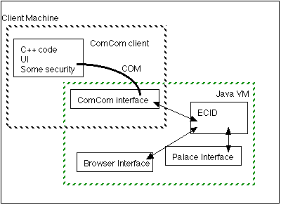
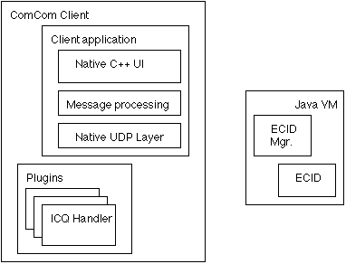

Introduction
The ComCom Client is designed to add value to the traditional
'buddy list' concept pioneered by ICQ by also tracking 'locations.'
The location information can be anything related to a persons presence on
the net -- the simple fact that they are 'online' and connected,
the URL(s) they are currently browsing, or the current Palace server they
are connected to.
The ComCom Client provides a rich, yet easy to use, interface to these
disparate types of information. It presents the concept of location in a
form that allows a much richer experience than merely knowing that your
friends are connected -- now you can find out where they are as well.
Related Documents
Bob's and
Karl's ComCom Design Notes
ECID & ComCom Home Page
ECID/ComCom Project Components List
ComCom System Architecture
Requirements
The ComCom Client needs to be able to display varied location information about
other ECID users, as well as aggregated information about the various locations
themselves (e.g. 'There are 15 people currently connected to the South Park
Palace', where the count is the number of ECID users currently connected).
In addition to displaying location information, the ComCom Client will also provide
a full-fledged user interface for the ECID core module. Through the ComCom Client, the user
will be able to change profile information, set up demographic data, and gain fine-grained
control over the various services provided by the ComCom client and the ECID module.
User Interface
The ComCom Client will be written in C++ using the appropriate application framework
for each platform (i.e. MFC for Windows, Metrowerks
PowerPlant for Macintosh, and perhaps Metrowerks Latitude for X-Windows).
As much of the core functionality dealing with processing messages from the server and
interfacing with the ECID module will be generic (i.e. cross-platform support will
be an key criteria in design decisions) while allowing each user interface paradigm to
be as natural as possible for each platform.
Initally, the ComCom Client will support a limited set of operations:
- Display and update a "Who's Online" window that displays the names/handles of the buddy list, with
their status (online or offline) and some indicator of how "stale" the information is
- Display and update a "Who's Where" window that displays a user-settable list of location information
for members of the buddy list
- Manage (edit and update) the profile information collected by the installer
- Manage (edit and request) an "Addressbook" that contains information relating to the profiles of
the members of the "buddy list" (e.g. nicknames) as well as the types of location information
desired.
In both the "Who's Online" and "Who's Where?" windows, clicking on any given line will bring up
a popup menu of options (send instant message, goto location, etc.). Some of these options may
be available in a pop-up menu in the "Addressbook" as well.
"Who's Online" Window
The exact look and feel of the window will be operating system dependant, but the main features will
be a list of names with an indicator next to each one. This indicator will change color based on the
currently known online status of the specified ECID.
- An open circle means that non information is known about that user.
- An circle filled in with red means that the user is currently offline.
- An circle filled in with yellow means that the user is probably online, but the information
is old, and no longer accurate.
- An circle filled in with green means that the user is currently online.
"Who's Where" Window
The "Who's Where" window consists of a list of pairs containing names/nicknames of selected ECID users
and their current location. In the single line mode, the last know location, regardless of type, will
be displayed next to each user. In expanded mode (which can be set on a per user basis dynamically, think
drop-down triangle from the Macintosh Finder), one (or more, based on a user preference) of each kind
of location received for that user will be displayed, along with an indication of how "stale" the
information is [color changes? timestamps?]. If more than one entry for
any given location type is specified, the last N entries for that location type will be
displayed for that user.
"Addressbook" Window
The "Addressbook" Window will display all of the ECID information kept by the user about other
ECID clients [Will we want to keep other indexes? Like ICQ and Yahoo! Pager
information even if they don't have an ECID?]. As each ECID is added to the addressbook, an
authenticated connection is attempted to the remote VAT, and the profile information for that ECID
is retrieved. The addressbook entry can be updated to contain a local "nickname" for that ECID, which
will be displayed preferentially in other ComCom Client windows.
In addition, the user will be able to "vouch" for any of the ECIDs in the addressbook. Part of the
profile information associated with an ECID is a list of other ECIDs willing to support the rest
of the information in the profile (PGP keyrings are an example). This way we can get a primitive
reputation system going, with very little effort on our part.
Architecture


Message Format
Messages from the ComCom Server will consist of UDP packets containing location and connection status
messages. There are two kinds of location message, and three kinds of status message.
- ECID Location message: consists of the ECID, the class of location message (e.g. PAL, URL,
MOO, MUD, etc.), the machine readable location string, an optional human readable location string, and
other optional application specific fields.
- Location "watch" message: consists of a "NULL" ECID, the class of location message, the machine
readable location string, an optional human readable location string, and
other optional application specific fields.
- Connection status message: consists of the ECID and one of login, logout, or "PING". Connections
status will also be inferred from ECID Location messages.
All messages will consist of ASCII strings [UNICODE strings?],
with an ascii TAB between each field.
Return to ECID & ComCom Home Page
Return to ECID/ComCom Project Components Page